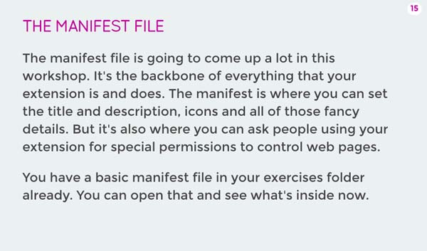
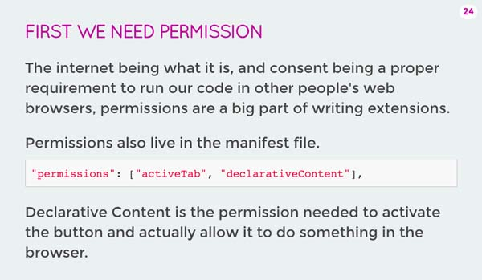
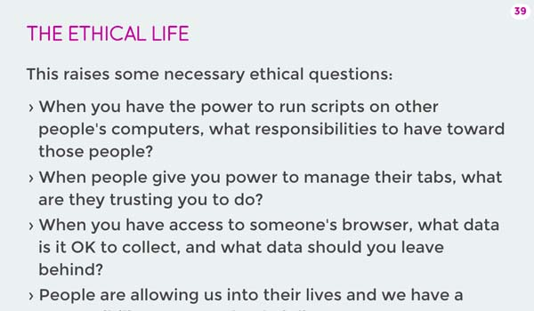
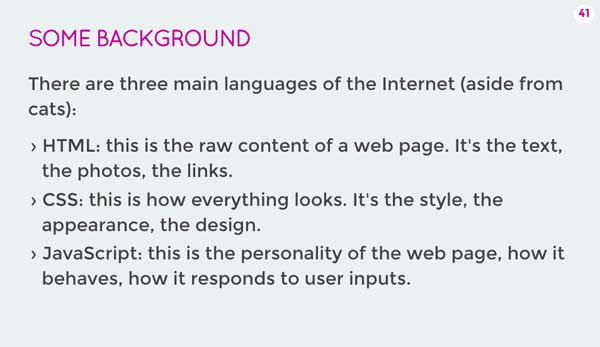
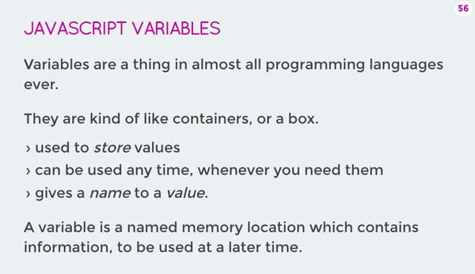
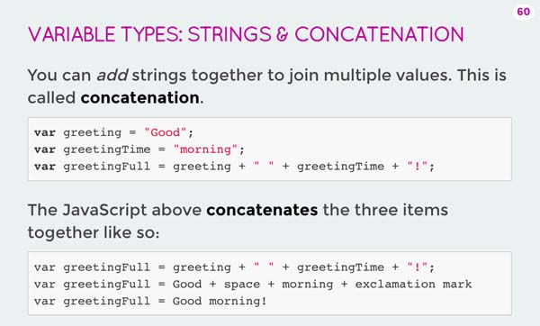
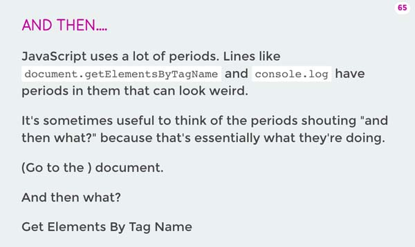

<!DOCTYPE html>
<html lang="en">
<head>
  <meta charset="utf-8">
  <meta name="viewport" content="width=device-width, initial-scale=1, maximum-scale=1">
  <title>Canada Learning Code</title>
  <link rel="stylesheet" href="framework/css/slideshow.css" data-noprefix>
  <link rel="stylesheet" href="framework/css/fonts.css" data-noprefix>
  <link rel="stylesheet" href="framework/css/highlightjs/github.css" data-noprefix>
  <link rel="stylesheet" href="framework/css/styles.css" data-noprefix>
  <link rel="shortcut icon" href="framework/img/favicon.ico">

  <!-- Takes care of CSS3 prefixes -->
  <script src="framework/scripts/prefixfree.min.js"></script>

  <!-- opens all links in a new window -->
  <base target="_blank">
</head>

<!-- Timer/progress bar: Define the presentation duration using "data-duration" in minutes. -->
<body class="en" data-duration="360">


  <main>

  <section class="slide" data-toc data-markdown>
    <script type="text/template">
      ##Instructor Notes

      ##Ladies Learning Code: Intro to Browser Extensions with JavScript

      <br>
      #Resources

      * Chrome Extensions - Developer page: [https://developer.chrome.com/extensions](https://developer.chrome.com/extensions)

      <br>
      #Schedule

      * <strong>Getting Started (10:00 am - 11:00 am)</strong>: Icebreaker, introducing topic, giving examples, loading the starter code for our extension in Google Chrome, editing the manifest file, changing the icon.
      * <strong>Code Along + Exercise (11:00 am - 12:30 pm)</strong>: Adding permissions + researching permissions in other extensions, creating a functioning button (moving over to script file), working extension that changes the background colour, discussion on ethics.
      * <strong>Lunch (12:30 pm - 1:30 pm)</strong>: Lunch should be around 12:30, depending on time that food arrives. The deck is organized so that lunch is around the end of the discussion on ethics (with room for flexibility!).
      * <strong>Code Along + Exercise (1:30 pm -2:00 pm)</strong>: HTML review (tags, attributes), how the files work together, adding transitions, exploring other properties that we can change.
      * <strong>Focus on: JavaScript (2:00 pm - 2:30 pm)</strong>: What is JavaScript, variables, using the console.
      * <strong>Code Along + Work Session (2:30 pm - 3:30 pm)</strong>: Choosing placeholder images, loops, <u>Uplugged Activity explaining <code>for</code> loops</u>, replacing images.
      * <strong>Stretch goals! (If you need to fill some time) (30 min- 1 hour)</strong>: event listeners (mouseover), removing elements.
      * <strong>Wrap Up (3:30 pm - 4:00 pm)</strong>: Demos ('Show and Tell'), Learning Outcomes, Next Steps.


      <br>
      #General Notes

      * Important! Please give learners enough time to download learner files from slide 1 - check in with them before continuing from this slide. 
      * Show learners how to open files. Go through the steps - e.g. Open Atom > File > add project folder.
      * Show learners how to copy text from slides + paste into atom. Keyboard shortcuts can be new to some learners: Remember to mention them especially since they're invisible to them when you use keyboard shortcuts on the overhead projector.
      * Remind learners to constantly SAVE + REFRESH (and show them how). Make a bunch of changes early to show how saving and refreshing isn't just how to code, it can be fun experimenting. Try an "oops, it broke, undo, save, refresh" to show how save experimenting is.
      * Share shortcuts and tips on navigating between windows. Hot corners, shortcut keys, taskbar hovers. Whatever works.
      * For Demos ("Show and Tell") it might be easier to share projects Gallery Walk-style. Have learners refresh their page and tuck in their chair, then give everyone 5-10 minutes to walk around and test out each other's extensions.

      <br>
      #Contingency

      There are notes throughout some of the slides that reference what to do if you are offline or the internet is slow where you are. If it's predictable that you will be in a low connectivity environment when delivering this course, it might be worthwhile editing the slides in advance to bring those notes into the primary text spot.

      If using the offline option, learners can apply their extensions to the example websites in offline1 and offline2 folders by right-clicking on the index.html > Open with > Chrome.

      In this case, we will use the images in the imagesOffline folder instead of the online placeholder images.

      ## Note: Common Issue
      When reloading your extension from the Extensions page, if you receive an error message, select "Retry."  If you select "Cancel" the reload icon disappears and you will need to remove then unpack your extention again for the reload icon to reappear.

      <br>
      #Specific Examples

      <table style="font-size:2rem;">
        <tr>
          <td><h2>Slide</h2></td>
          <td><h2>Notes</h2></td>
        </tr>
        <tr>
          <td></td>
          <td><strong>Slide 17: Manifest File</strong>
            “The manifest file is the foundation of the ship”
            The metaphor of construction can be useful here: We're building it together, this is the list of things in our construction project.</td>
        </tr>
        <tr>
          <td></td>
          <td><strong>Slide 26: Permissions</strong>
            Facebook might be able to tell us “Hey Jimmy your friend's bday is coming up” → we can choose to think that’s creepy or helpful, but the point is we need to have the choice.</td>
        </tr>
        <tr>
          <td></td>
          <td><strong>Slide 26: Permissions + Tabs</strong>
            I always share stories of introducing people to tabbed browsing for the first time. It's like magic.  “I’m going to tell you something that will change your life. Tabs!” Then they have a million open - not sure if I helped or not.</td>
        </tr>
        <tr>
          <td></td>
          <td><strong>Slide 41: Ethics</strong>
            Jurassic park phenomenon - “You spent so much time figuring if you could do something, you never stopped to ask yourself if you should.” Stop to ask yourself that question frequently.</td>
        </tr>
        <tr>
          <td></td>
          <td><strong>Slide 43: HTML vs CSS vs JS</strong>
            House analogy - the html is like the structure/walls/furniture, the css is the design/paint/accessories, and the javascript is the functionality (like the alarm/security system). Also use the body analogy (bones, clothes, personality) if that works better for the crowd.</td>
        </tr>
        <tr>
          <td></td>
          <td><strong>Slide 58: Variables</strong>
            How FB remembers birthdays, amazon remembers your shopping cart, etc.</td>
        </tr>
        <tr>
          <td></td>
          <td><strong>Slide 62: Strings and Concatenation</strong>
            Like a friendship bracelet - ‘stringing’ letter beads together.</td>
        </tr>
        <tr>
          <td></td>
          <td><strong>Slide 67: Dot Notation</strong>
            SNL skit or MadTV skit that used "aaan theeen" as the punchline. The dots are constantly saying “and then what?”</td>
        </tr>
        <tr>
          <td></td>
          <td><strong>Slide 72: Loops</strong>
            Assembly line - humans mess up repetitive tasks → while computers are really good at them</td>
        </tr>
      </table>

    </script>
  </section>

  </main><!-- cls main section -->

  <script src="framework/scripts/jquery-1.11.0.min.js"></script>
  <script src="framework/scripts/slideshow.js"></script>

  <!-- Uncomment the plugins you need -->
  <script src="framework/scripts/plugins/css-edit.js"></script>
  <script src="framework/scripts/plugins/css-snippets.js"></script>
  <script src="framework/scripts/plugins/css-controls.js"></script>
  <!-- <script src="plugins/code-highlight.js"></script>-->

  <script src="framework/scripts/plugins/markdown/marked.js"></script>
  <script src="framework/scripts/plugins/markdown/markdown.js"></script>
  <script src="framework/scripts/plugins/highlight/highlight-8.4.min.js"></script>
  <script>hljs.initHighlightingOnLoad();</script>
  <script src="framework/scripts/llc.js"></script>
  <script>
    var slideshow = new SlideShow();

    // Grabs all the .snippet elements
    var snippets = document.querySelectorAll('.snippet');
    for(var i=0; i<snippets.length; i++) {
      new CSSSnippet(snippets[i]);
    }
  </script>
</body>
</html>
